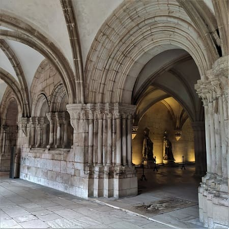
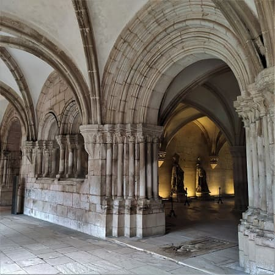
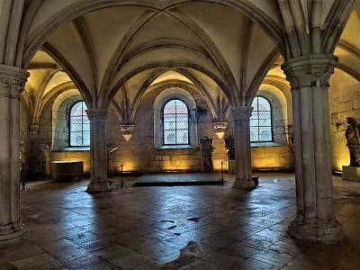
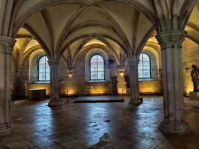

Salí de Lisboa hacia Santarem, ciudad que si bien tiene varios sitios de interés me fui con la sensación de no estar echa para el turista de a pie. Santarem es la capital de uno de los distritos de Portugal, y una de las ciudades más antiguas de Portugal en la que se han encontrado restos del siglo VIII antes de Cristo, muy posiblemente de la cultura tartesa cuyo eje iba desde Badajoz hasta Cádiz. Desde ahí su mayor importancia llegaría en la edad media y donde iría perdiendo fuerza frente a la capital. Es conocida por ser la capital del gótico portugués por la cantidad y calidad de sus edificios religiosos de ese estilo durante los siglos XIII y XIV.
Como edificios religiosos aparte de la catedral tenemos el convento de santa Clara, edificio del siglo XIII, donde destaca su iglesia, también de estilo gótico. La ausencia de portada en la fachada acentúa aún más la desnudez del exterior.Tiene 72 metros de longuitur y ternmina en un gran rosetón de estilo gótico. También en el hay frescos del siglo XVII.


Otro convento es el de de Nuestra Señora del Sitio, y el convento de san Francisco, edificio del siglo XIII, de estilo gótico que sería ampliado en diferentes momentos desde el siglo XIV y llevaría el estilo de la fecha el gótico. En el siglo XVII y XVIII se incorporaran elementos decorativos de estilos renacentista y manierista, añadiendo capillas a la iglsia. En el siglo XVIII una congregación de monjes habitaría el convento pero en un siglo después dejaría de funcionar y pasaría a formar parte de edificio del ejército. Por esta razón sé iría deteriorando pero en el año 2009 empezaría una fuerte restauración. Tiene un gran claustro de dos plantas de estilo románico y gótico con capitles ornamentados. En la iglesia estuvo el sepulcro de uno de los reyes de Portugal más antiguos, Fernando I.


Otra iglesia de estilo gótico es la iglesia de Santa María de Gracia. Esta iglesia del siglo XIV y finalizada en el siglo XV tiene una de las portadas más bellas de la ciudad de Portugal. De estilo gótico flamigero, intenta copiar el estilo predominante en aquel entonces, cuyo exponente máximo en Portugal es el monasterio de Batalha. Dentro de la iglesia estan el sepulcro y los restos del descubridor de Brasil, Pedro Álvares Cabral y de su esposa y existe una estatua en el exterior.


Otra iglesia importante y de las más antiguas la iglesia de santa María de la Maravilla, del siglo XII que fue construida por los caballeros templarios. Es cierto que sufriría cambios en el siglo XVI amoldandose a las iglesias de esa época con el uso del azulejo como protagonista. A la derecha la iglesia del hospital de la Misericordia, renacentista del siglo XVI.


Otras iglesias más modernas son, la iglesia de la Piedad, y la capilla de santa Iria, ambas de finales del siglo XVII de estilo renacentista.
Por último visitaría La Catedral de Nuestra Señora de la Concepción o simplemente Catedral de Santarém es un templo jesuita, que data del siglo XVII, fue erigido en el sitio donde estaba el palacio real de la Alcazaba Nova, que fue abandonado desde la época del rey Juan II. Más tarde, con la expulsión de los jesuitas de Portugal, por orden del Marqués de Pombal, el edificio comenzó a acoger el Seminario Patriarcal después de la donación D. Maria I, y así se mantuvo hasta el siglo XX.
Cuando se produjo la creación de la Diócesis de Santarém, en 1975, la iglesia fue elevada a la estatus de catedral. Destaca la sala capitular con su techo pintado de grandes frescos y con madera policromada.

Otros sitios de interés son el mercado central, en la foto, que contiene una buena colección de azulejos con temática del mundo campestre, la torre das Cabaças y la torre del reloj (antiguo ayuntamiento).

Después tomaría dirección norte con destino Óbidos.
Su nombre significa ciudad fortificada y no es para menos puesto que su muralla esta conservada en su totalidad. Este pueblo es considerado como uno de los más turísticos de Portugal y es debido a que tiene un casco histórico reducido pero cuidado en la totalidad.
La muralla medieval de Óbidos se puede recorrer a pie y es de más de 1 km. No tiene ninguna barandilla por lo que hay que tener mucha precaución. Además cuenta con una plaza mayor muy cuidada con la iglesia y el ayuntamiento como se puede ver en la siguiente imagen.


Además cuenta con dos pequeñas iglesias que se conservan perfectamente como es la iglesia de Santa María del siglo XIII, construida sobre una antigua mezquita, y la iglesia de San Pedro, del siglo XVIII, de menos valor por estar reconstruida sobre la anterior iglesia gótica.
Muy cerca de este pueblo había un antiguo poblado romano y de el se conserva el acueducto que es visible ya desde la carretera.


Por último partiría para ver las tres ciudades de los monasterios de Portugal. Alcobaça, Batalha y Tomar. Decir que la visita a los 3 monasterios puede ser pagada en conjunto a muy buen precio, 15 euros general y 7,5 reducida que es la que pague yo por ser profesor. Estos monumentos a mi entender en conjunto son los de más importancia histórica y artística de Portugal. Añadiendo que solamente el monasterio de Batalha ocupa el segundo lugar de sitios más visitados anualmente por turistas de Portugal, y el convento del Cristo de Tomar el quinto.
Primeramente iría a Alcobaça donde vería la plaza del monasterio muy amplia, y ya dentro comprobaría la amplitud de su iglesia.
El Monasterio de Santa María fue fundado en 1153 por órdenes de D. Afonso Henriques, el primer rey de Portugal, para cumplir un voto que había realizado a San Bernardo tras recuperar Santarém de manos moras en el año 1147. Tras su construcción, el rey confió tanto el monasterio como varias tierras de cultivo de sus alrededores a los monjes del Císter.
Su construcción se erigió en el año 1178, pero los monjes no fueron instalados hasta 1223, cuando el monasterio ya se había convertido en uno de los más ricos y poderosos de Portugal. Se cree que en aquella época en el monasterio vivían 999 monjes, que celebraban misas por turnos, sin interrupción.
Lo que más me llamo la atención fue la tumba de los reyes, don Inés de Castro y Dom Pedro, que reposan en la iglesia, con una gran cantidad de detalles en sus tumbas, con relieves referentes al cielo y el infierno y a la vida pública de Jesús


También la sala capitular con la escalera que recuerda a otros monasterios españoles de la orden del cister. Como se puede ver en la imagen el altar mayor es bastante sobrio, sin retablo, muy en el sentido de austeridad de la orden.

 

También una sala con miniaturas de santos o reyes que esta decorada además con azulejo portugués y de su amplio claustro. Debajo fotografías de la sala de comedor y del claustro del Silencio

 


Por ultimo la sala más importante del monasterio, la sala de los Reyes, con numerosas tallas de los reyes de Portugal.


© 2016 - All Rights Reserved - Diseñada por Sergio López Martínez
El sitio se mantiene gracias a la publicidad, por favor Desactiva Adblock para seguir navegando
He desactivado Adblock![[Valid RSS]](https://www.onepointsync.com/wp-content/uploads/2016/08/valid-rss-rogers.png "Validate my RSS feed")